The site has to help people understand the organisation and its work
The Open Data Association (ODA) works with open data, anti-corruption projects and training. For a potential partner the site has to answer specific questions: what the organisation does, which projects it runs, who it works with and how to reach it.
At the start there was a site on Wix, initial mockups of three pages and approved texts. My task was to bring these materials together and take the design all the way to handoff.
26 problems – and a clear order of work
I compared the live site, the mockups and the content matrix. I found 26 problems, 6 of which got the highest priority.
Three things affected the structure and interaction the most:
- The navigation didn’t match the content. The header and footer had different sets of items, and some links were duplicated.
- 16 links had no accessible name. With a screen reader, project and blog cards couldn’t be told apart by name.
- The form needed work. The initial mockups lacked the approved consent checkbox and interaction states.
The audit set the priorities: structure, access to content and the form first, then component consistency and visual details.
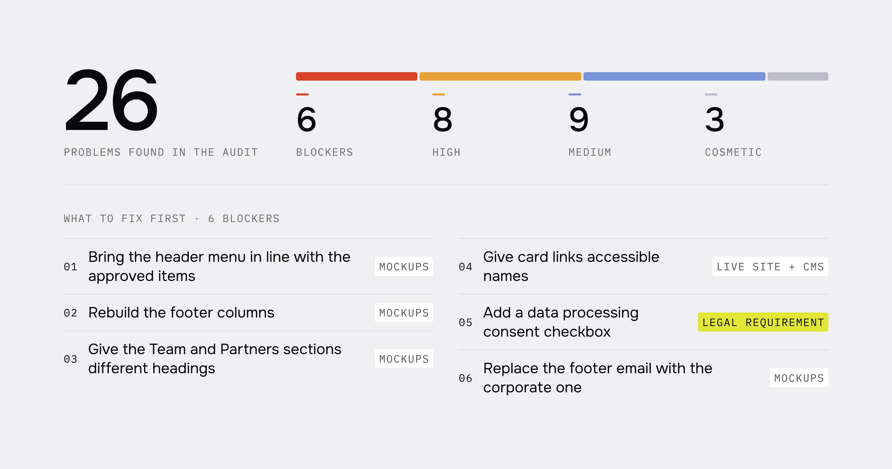
What information a potential partner needs to see
I analysed seven Ukrainian and international organisations working on open data and public oversight. I focused on three questions: how they present projects, where they keep reports and how they show partners and donors.
This helped define what the site should carry: the donor, period and status of a project, reports and documents, a clear path to cooperation. Separately, I suggested adding governing bodies and founding documents to the information about the organisation.
Build the navigation around a clear structure
- Problem
- The menu mixed home-page sections with separate pages, and the footer duplicated links.
- Decision
- I designed the home page with anchor navigation. The blog, articles, reports and the privacy policy got their own pages. Project details open in a modal.
- What changed
- Every type of content has its place and way in. In a project the key information – donor, period, directions and status – comes before the full description.
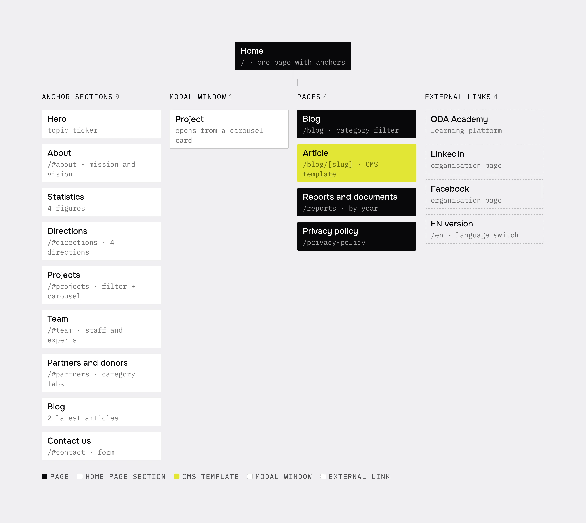
Separate project navigation from project tags
- Problem
- In the materials, six projects had 13 different tags. Using all of them in the filter overloaded the navigation.
- Decision
- In the final interface the filter has five tabs, including “All projects”. Detailed attributes stay as tags on the cards.
- Next step
- I suggested tying the filter to the organisation’s four strategic directions. That keeps a stable set of categories as the number of projects grows.
Match the call to action to the cooperation scenario
- Problem
- The “Support” button could suggest a donation, while the form is meant for cooperation requests.
- Decision
- I used “Join” as the way to the form. I added a choice of cooperation type, consent to data processing and clear error messages.
- What changed in the design
- The button matches the next step, and the form has defined states for fields, the checkbox and focus. Errors are explained in text next to the field.
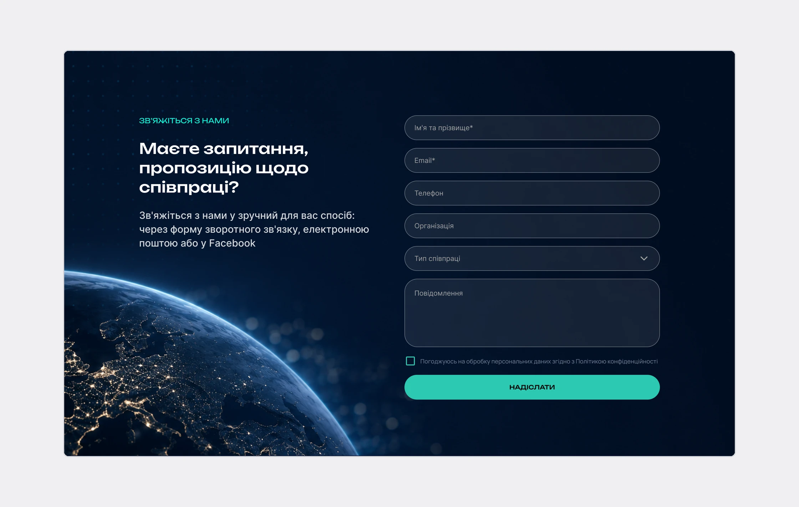
The home page block by block, the blog and an article
The home page is one page with nine anchor sections. Below are some of its blocks in the order they appear on the page.
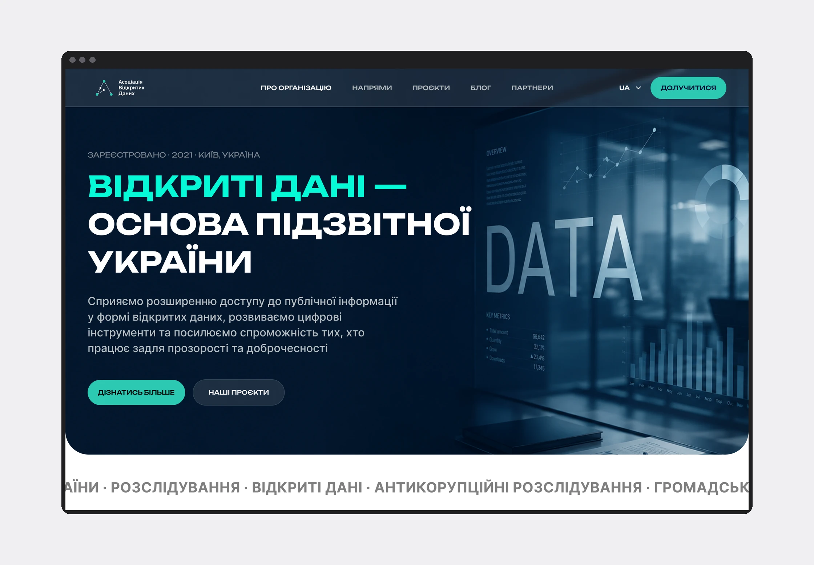
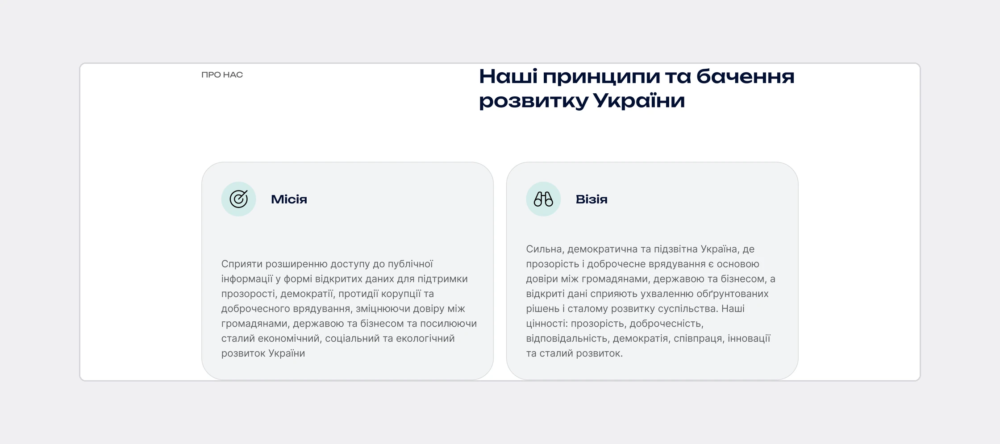
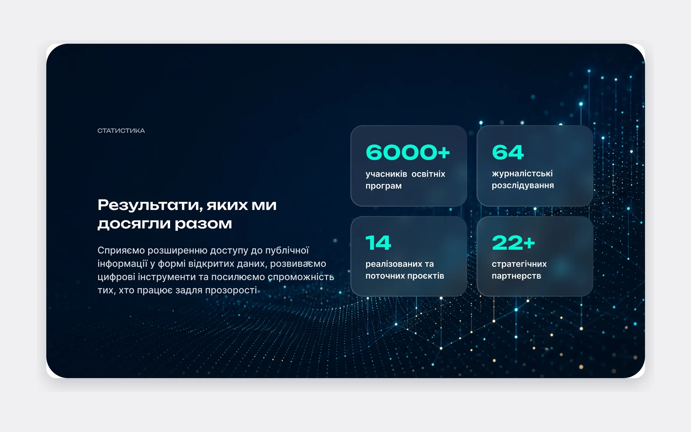
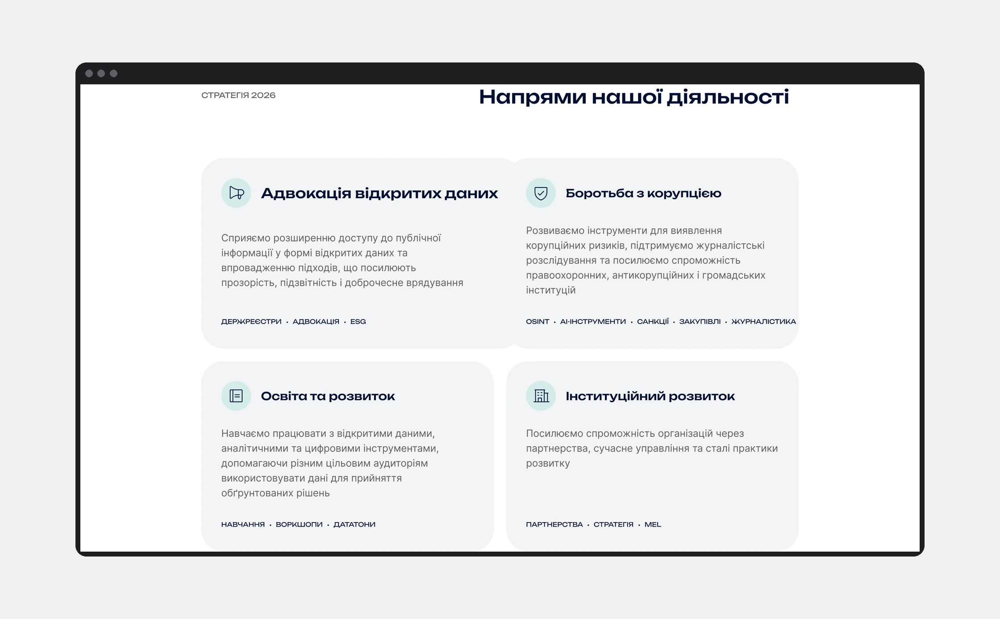
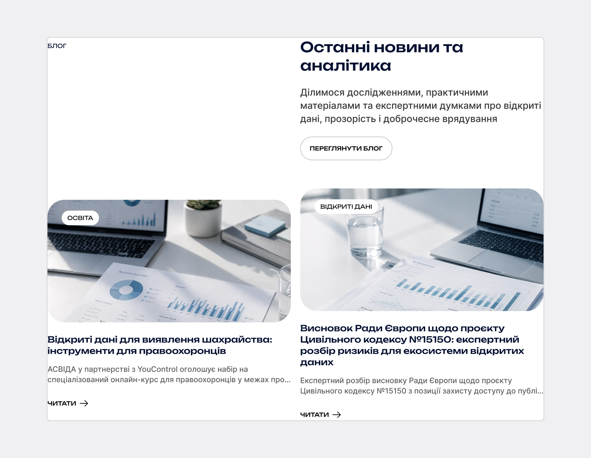
The blog and articles are separate CMS pages. The list filters by category; on mobile the filter folds into a dropdown. Every article uses one template: the category in the breadcrumbs, date and reading time, a cover, a callout, sources and “Read also”.
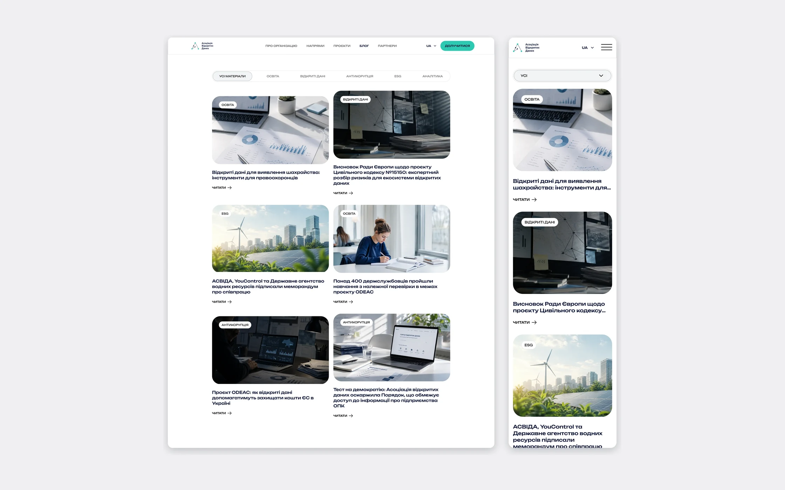
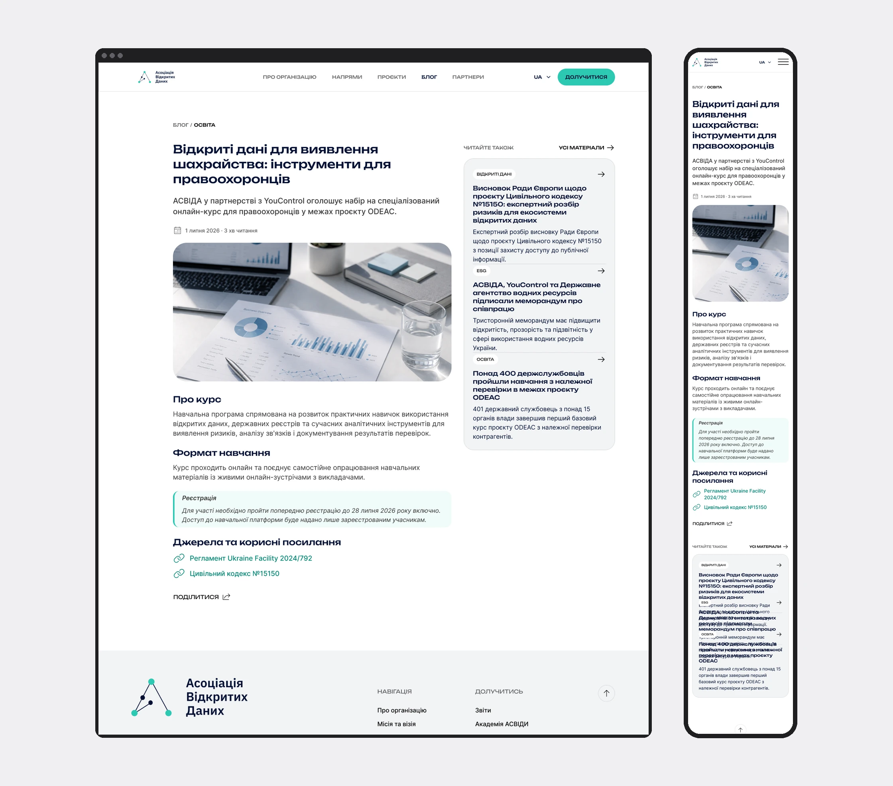
From checking contrast to interaction requirements
I checked 21 colour pairs. Based on the results I changed two tokens and added three new ones for captions, errors and field borders.
- 4.67:1AA
captions on the grey background
- 4.80:1AA
error text on dark
- 3.12:1AA
form field border
Separately I prepared 12 requirements for the build: visible focus, accessible card names, keyboard navigation, motion control and text form messages.
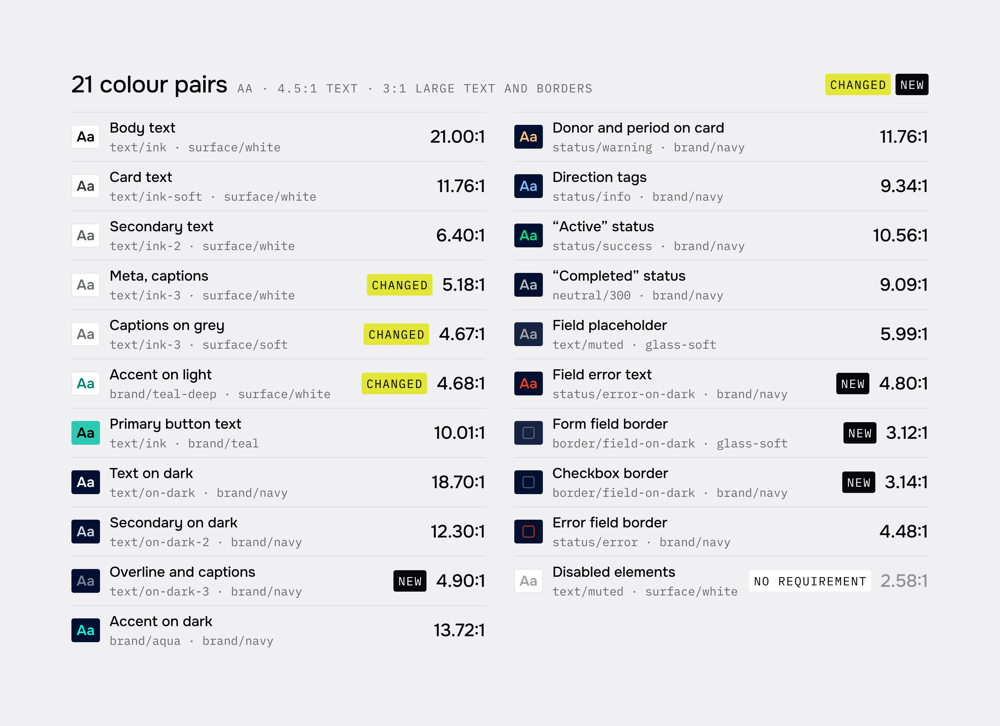
One set of rules for pages and new content
I put together semantic colour variables, 25 text styles, spacing and components with states. I prepared page blocks for Desktop, Tablet and Mobile.
For the CMS I described the content structure and the links between collections. For the organisation’s team I prepared three instructions for creating images: article covers, project illustrations and editing staff photos.
This gives a base for developing the site further while keeping a consistent style.
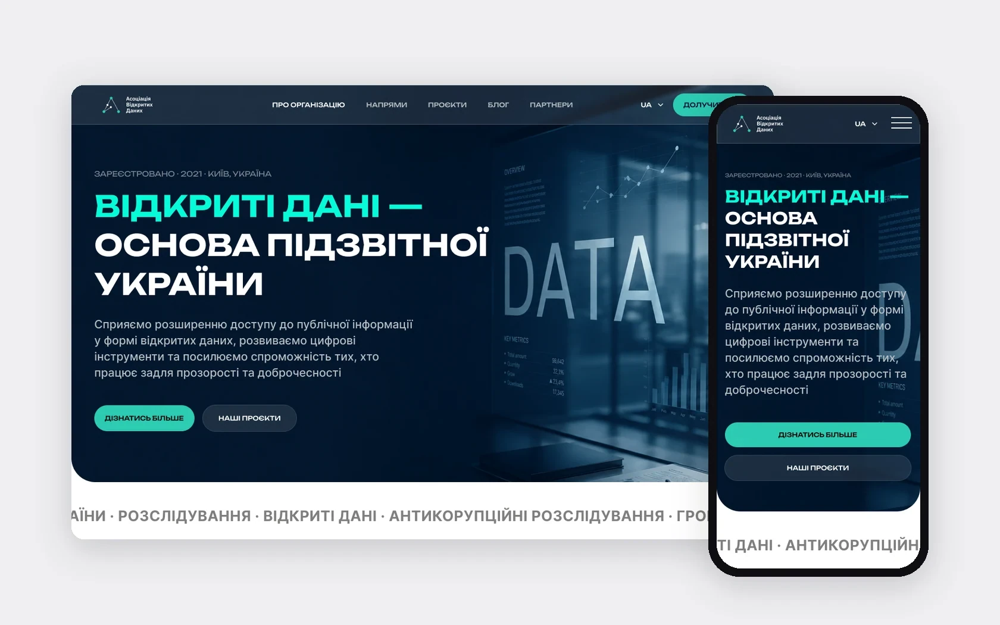
From scattered materials to a consistent design
In this project I combined the audit, structure, interface and build requirements. The result is responsive mockups, components, the CMS structure and documentation that explains how the site should look and work.
The most important part of the work was aligning content, navigation and interaction: from the information on a project card to the error state in the form.
Next steps: check the built scenarios with a keyboard and a screen reader, test finding a project and sending a cooperation request, and once analytics builds up, see where people stop.